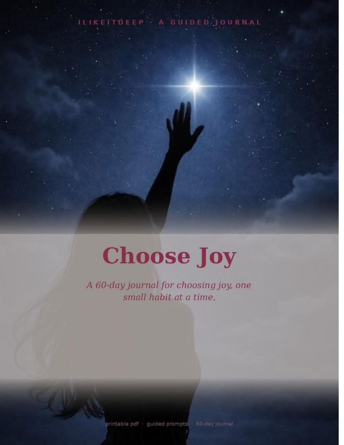
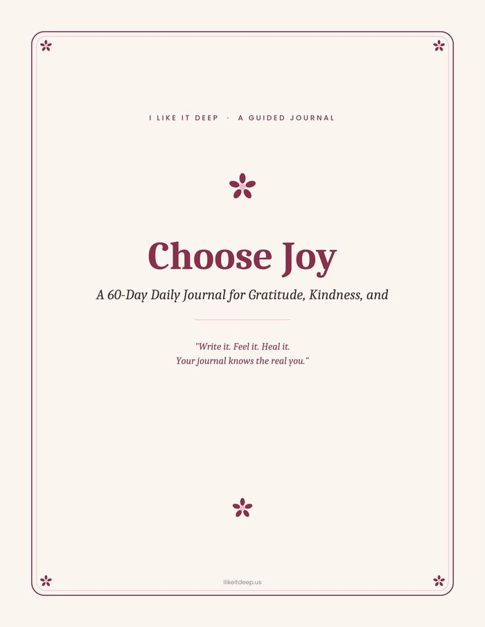
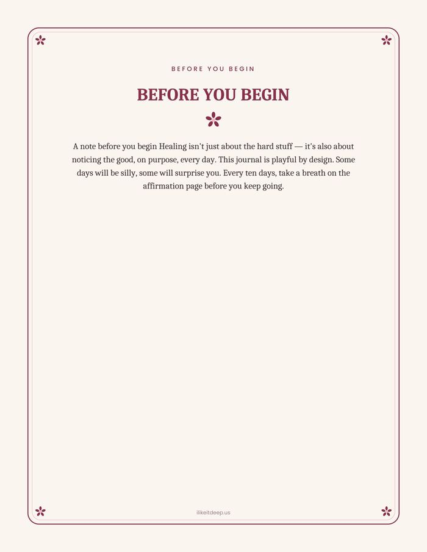
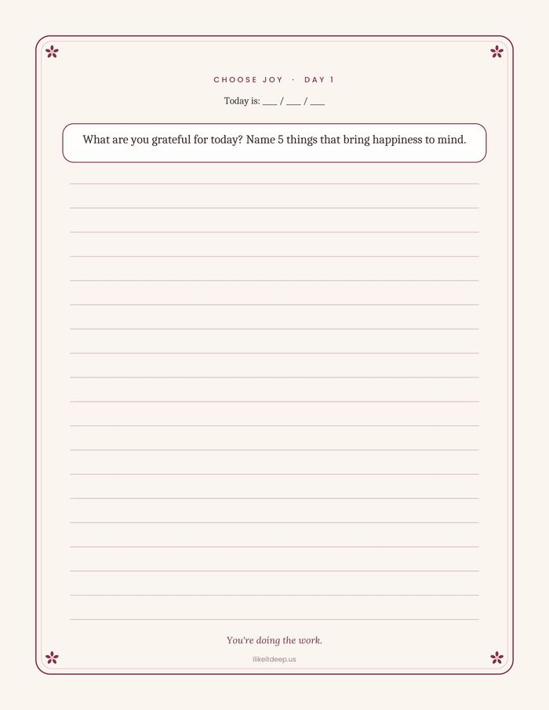
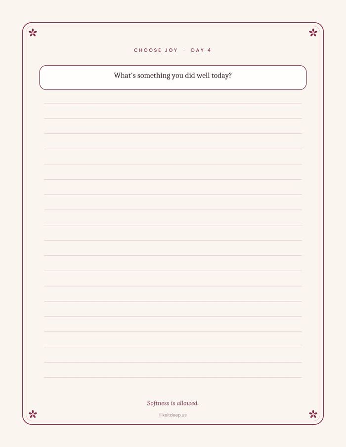
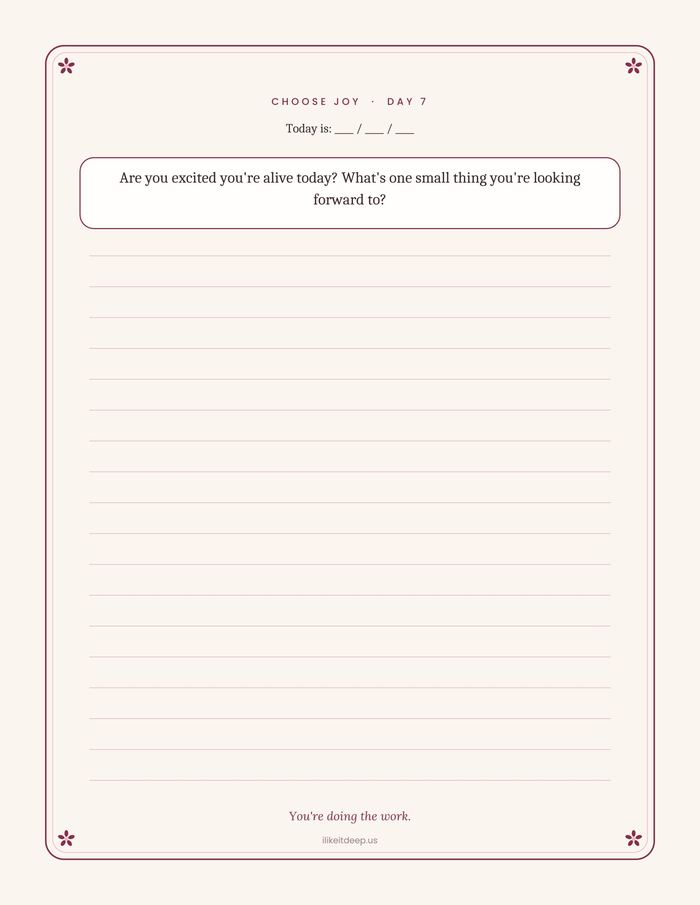
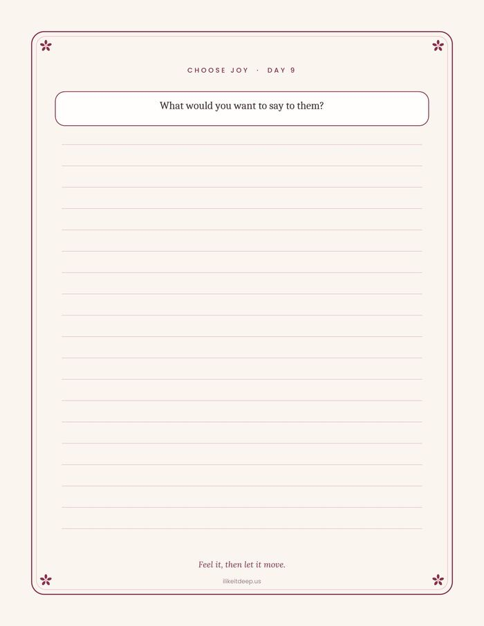
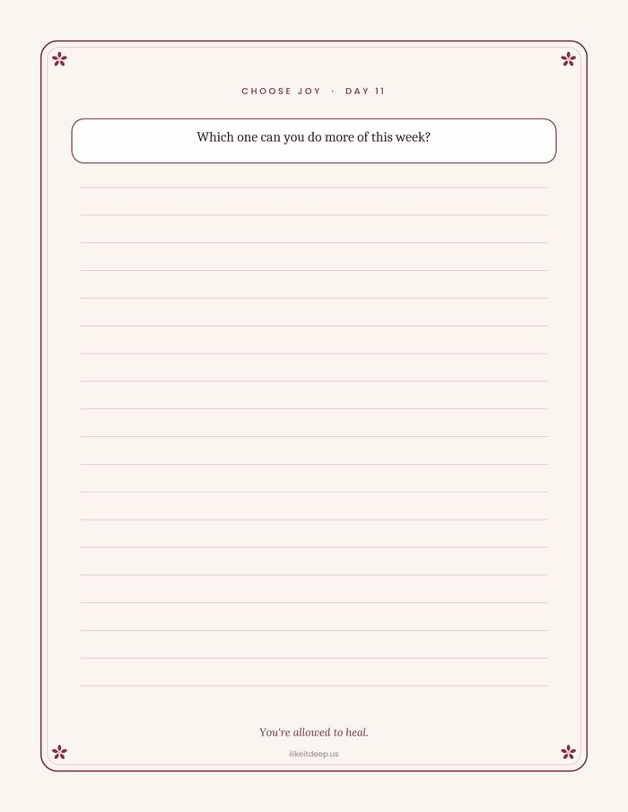
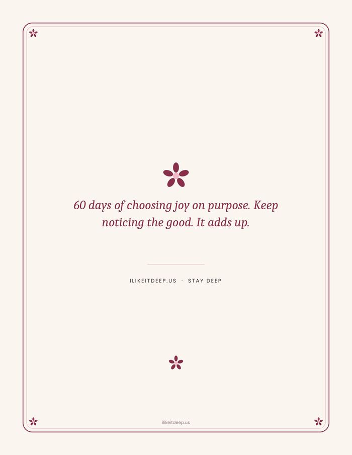

Journals that don't
do small talk.
Guided pages for the stuff you don't say out loud — habits, heartbreak, recovery, grief, and everything underneath.
Start DiggingYour journal knows the real you."
Healing & Inner Work
Shadow work, shame, the parts of you that need a witness.
30-Day Resets
Step-down journals for cutting back, one day at a time.
Family & Relationships
The people who shaped you — and the pages that untangle it.
Faith, Mindset & Life
WHY, purpose, and the mindset work that holds everything up.
Grief
For the losses that don't always get talked about — people, pets, and pieces of yourself.
Daily & Interactive
60-day daily journals to check in with yourself, one page at a time.
Bad Bitch Collection
Level up your life, your confidence, and your glow — no apologies.
Flip through real pages from Choose Joy — the actual layout, the actual prompts, before you buy.









tap the arrows to flip through
Why I Made This
These journals didn't start as a business. They started with me, trying to figure out what was actually blocking me — the patterns and old stories keeping me stuck, keeping me from the life I wanted to build.
Writing it out, question by question, was the thing that finally worked. So I made more — for the situations people I love were carrying too: grief, family, addiction, shame, all of it. Now that this site is finally live, I'm working through these pages myself right alongside you.
No fake ones, ever — just honest words from the people who've used these pages.
Bought a journal? Tell us about it.
Every review goes straight to Steph's inbox and gets read by an actual person before it's posted.
Going through something that isn't covered yet? Tell us about it — if it fits, we'll build it.
Send Request